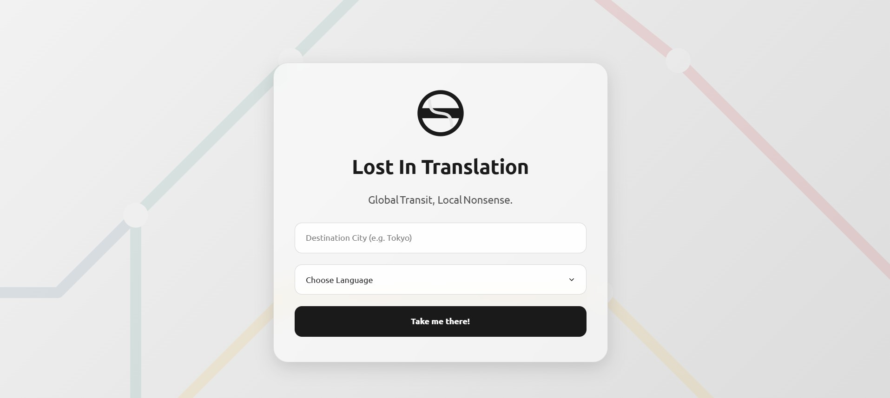
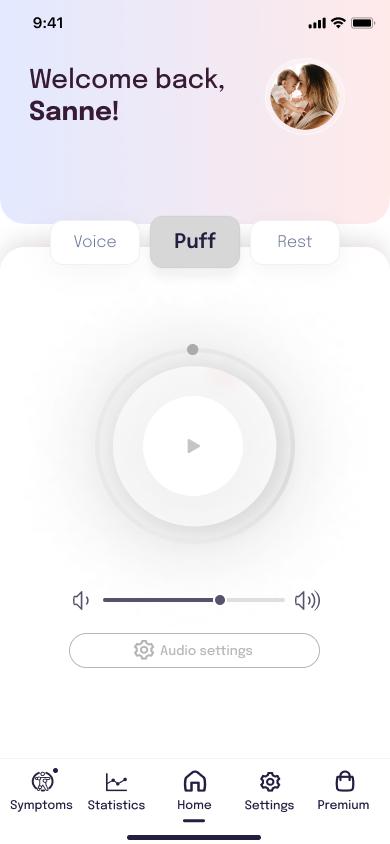

TU/e Learning Dashboard
I laid the groundwork for a new learning dashboard that visualizes academic performance and provides dynamic recommendations on how students can improve their learning for the university's Canvas-platform.
Read More
Graduated MSc Human‑Technology Interaction and Senior Data‑/BI‑Advisor at the Dutch Employee Insurance Agency (UWV), I specialize in creating intuitive, data‑driven solutions with organizational and societal impact. From stakeholder research and conceptual design to prototyping and technical implementation, including designing ETL pipelines and setting up a backend infrastructure, I take ownership until the final release by additionally developing the frontend. I thrive in agile, multidisciplinary teams, so let's collaborate and build something unique together!

I laid the groundwork for a new learning dashboard that visualizes academic performance and provides dynamic recommendations on how students can improve their learning for the university's Canvas-platform.
Read More
At Blue Jay, my team and I were committed to creating a drone that can assist healthcare workers in their daily tasks and can serve as an an intelligent companion for patients. The goal at Blue Jay is to expand the capabilities of intelligent systems by developing drones that are safe, autonomous, interactive, and helpful.
Read More
What began as a fun way to practice Swedish while living Stockholm turned into a design project powered by AI. I built a custom algorithm and a cast of quirky AI travelassistants—each with their own personality—to generate metro maps with absurdly literal, customizable perfectly incorrect translations. Soon, anyone can create a personalized, hilariously inaccurate transit map, crafted by my highly incapable travel assistants. Global Transit, Local Nonsense. Just mind the (language) gap in between.
Buy your own poster soon!
For a 10-hour time limited UX/UI Case Study, I was given the opportunity to redesign the design for an outdated pregnancy symptom and contraction tracker app built in 2014. My process involved in-depth user and usability research to identify and address key pain points within the existing app. The result? A transformation of the app's visual style and a substantial enhancement of the user experience.
Case Study
This webtool allows students to watch and annotate YouTube videos and search for keywords in the video's transcript to find relevant parts in the video. Notes can be saved to specific timestamps in the video and notebooks can be saved to personal user accounts.
Full Demo
For a project at KTH, we embarked on a mission to enhance Spotify's Podcast section. Employing the Double Diamond framework, our design approach centered on goal-oriented strategies to uncover and meet user expectations.

The present-day shopping experience can be stressful and aggravating to some (think of crowded clothing stores and a lack of self-efficacy). What about letting the customer decide when they need assistance? Rodebjer’s Digital Shopping Assistant helps them do just that. This digital help desk bridges the gap between customers and salespeople by letting the customer decide when, and what for, they need help.
View Workbook
One of my favorite personal projects is creating "Honeymoon Webshops" for newlyweds. I built a custom website that lets wedding guests buy and customize honeymoon gifts like activities and hotel stays. After the big day, all the thoughtful presents and messages were beautifully displayed on a bulletin-style collage frame.
Read More
I'm looking for new challenges to combine my design and development expertise. Let’s connect!
Contact Me